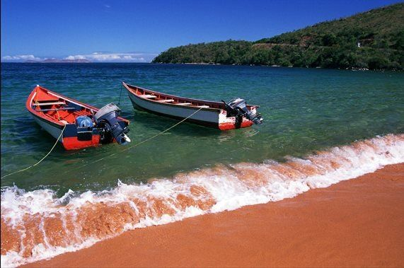
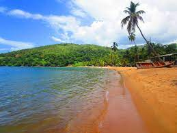
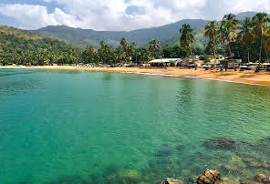
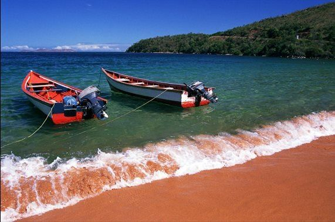
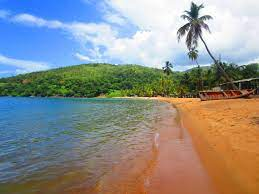
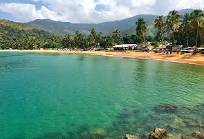

Soy una playa venezolana, ubicada en el parque nacional Mochima en el estado Sucre. Está a mitad de camino entre Puerto La Cruz (Estado Anzoátegui) y Cumaná (capital de Sucre). Debe su nombre al color de su arena, que tiene tonalidades que van del rojizo al dorado. Se caracteriza por sus aguas cristalinas, sus cocoteros y su rica fauna. Es un área protegida por encontrarse en el interior de un parque nacional y, como uno de los puntos más concurridos del parque, proporciona diferentes servicios al visitante.
 





PLAYA COLORADA
UN POCO MAS
La belleza del parque Nacional Mochima, radica en la combinación de montañas que caen al mar, playas espectaculares, cantidades de islas (muchas de ellas prácticamente vírgenes), a las cuales se puede llegar con el servicio de botes que se consigue en el área. Es uno de los destinos turísticos más espectaculares de Venezuela.